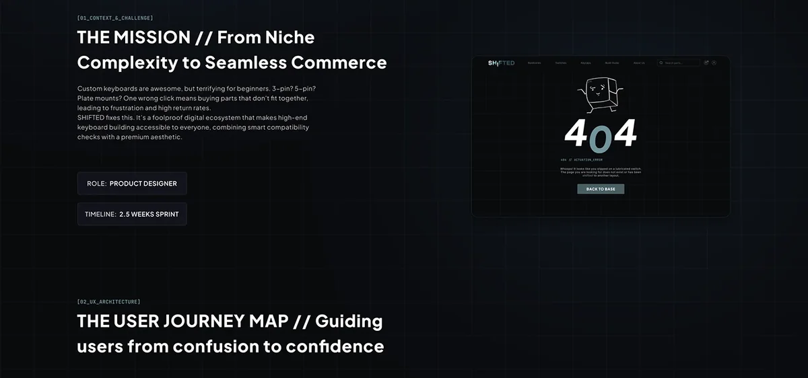

SHIFTED — это концепт e-commerce marketplace для людей, которые собирают механические клавиатуры не потому, что «нужна клавиатура», а потому что у каждой детали есть характер.
Покупатель кастомной клавиатуры хочет свободы выбора, но совместимость корпусов, свитчей, кейкапов и других компонентов быстро повышает когнитивную нагрузку.
Я сфокусировалась на сценарии конфигурации, структуре каталога, состоянии совместимости и B2B-части для продавцов.
Маркетплейс-концепт с конфигуратором, проверкой совместимости, тёмным визуальным языком и 14+ экранами в Figma.
Кейс показывает, как сложный e-commerce сценарий можно сделать более понятным за счёт структуры, подсказок и выразительного интерфейса.
Сложная конфигурация без ощущения сложности
Главный вызов проекта — дать пользователю свободу кастомизации, но не заставить его держать в голове совместимость корпусов, switches, keycaps и других компонентов. Я придумала структуру, исследовала пользовательский сценарий и спроектировала 14+ экранов.

Визуальный язык
В основе — тёмный интерфейс, крупные продуктовые изображения и ощущение маленькой технологичной мастерской. E-commerce здесь должен был быть не каталогом с бесконечными фильтрами, а местом, где хочется собирать вещь под себя.